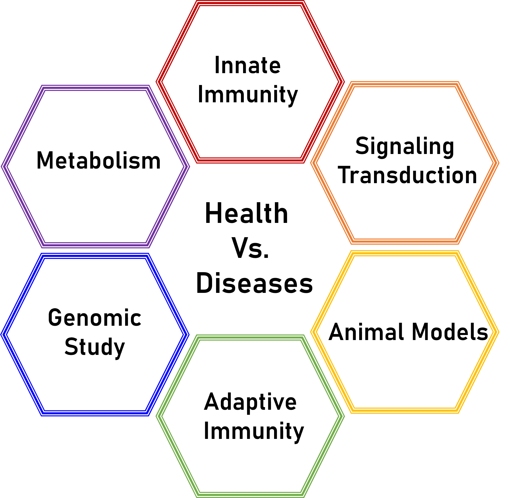

實驗室簡介 / Research Interests

免疫系統是生物經過長久演化下而得到最複雜且精妙的產物。免疫反應是雙面刃，免疫低下及過度的免疫反應皆導致疾病發生。我們實驗室的研究主軸是探討宿主的免疫調節機制與疾病的關聯性，包含宿主執行免疫力對抗病原菌及癌細胞，以及當宿主免疫失調而失去了免疫韌性所引起的發炎性疾病與自體免疫疾病。從免疫學的角度輔以基因、蛋白質與代謝體，系統式地探討免疫學在人類健康與疾病的影響力。免疫細胞變化萬千有著各種的樣貌。我們從不同面向地探悉免疫學的核心課題，再回到醫學的本質，透過基礎免疫學的角度，解釋及解決臨床醫學未滿足的需求。
我的研究室旨在培養研究人員具有「問對問題，找到問題，解決問題」的核心能力。我帶領學生從科學四部曲：觀察、提問 、假設以及驗證深入探索生物醫學研究的樂趣。
在人工智慧的世代，如何訓練學生具備縝密的邏輯思考能力以及問對問題的能力尤其重要。我的實驗團隊透過科學素材帶領學生養成敏銳的觀察力與操作技能，並透過先進平台及跨領域的合作培養學生對於基礎醫學與轉譯醫學研究的執行力。無論你是理工醫農的大學生，還是有志投入免疫學研究及相關應用的候選人，歡迎你與我們聯繫，深入了解實驗室的研究主軸，體會基礎醫學的重要性及實踐轉譯醫學的臨床應用。
Our research team has been investigating the physiological roles of innate immune receptors and regulators in affecting host immune responses and their pathological roles in breaking down immune resilience and homeostasis.
These innate immune responses are achieved by coupling a panel of immune sensors/receptors through selected activation of signaling cascades such as NFkB activation, inflammasome activation, cGAS-STING axis, and TBK-IRFs. Our research team has been investigating the dysregulation of these pathways in causing inflammatory diseases through abnormal cell deaths such as pyroptosis and NETosis. We focus on the role of neutrophils and dendritic cells participating in human health and diseases.
Neutrophil is the most abundant type of leukocyte in circulation, executing immune surveillance, phagocytosing pathogens, and performing neutrophil extracellular traps (NETs) to confine and kill pathogens. While neutrophils deal with diverse pathogens through NETs, NETs are also the critical pathogenic factor contributing to inflammatory and autoimmune diseases. We focus on systemic lupus erythematosus (SLE), arthritis, and cardiovascular diseases, in which a member of the NOD-like superfamily, NLRP12, regulates NET formation, mitochondrial pathological change, and type I IFN production in neutrophil, shaping the immune responses and involved in the pathogenesis of those inflammatory diseases. Our team engages in these research topics to investigate the role of NLRP12 in inflammatory diseases and its clinical applications. Additionally, we have projects to explore the host immunity harnessed by innate immune receptors where dendritic cells secrete IL-23 and IL-1β through a member of the C-type lectin superfamily, CLEC5A, to drive γδ+ T activation, producing IL-1, facilitating the effector function of cytotoxic T cells to eliminate bacterial infected cells. Recently, we found that CLEC5A signaling in dendritic cells regulates antigen cross-presentation by affecting phagosome homeostasis and metabolic reprogramming. The specific glycan components derived from the bacterial cell wall stimulate the CLEC5A signaling cascade, essential in shaping T cells' clonality and diversity. We will use the NGS approach plus the in vitro antigen cross-presentation platform to address this critical finding, facilitating its application in cancer vaccine development.